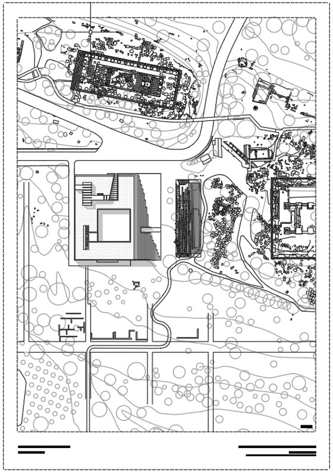
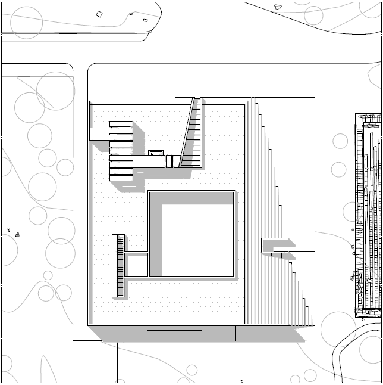

Padiglione per Tempio di Zeus
UN PADIGLIONE ESPOSITIVO PER LA VALLE DEI TEMPLI DI AGRIGENTO
Motto: Portali Direzionati
Il progetto prevede la realizzazione di un padiglione espositivo destinato ad accogliere il modellino in sughero del
Tempio di Zeus, attualmente conservato presso il Museo archeologico regionale Pietro Griffo di Agrigento.
L'intervento si colloca
direttamente a fianco del basamento del tempio, instaurando un rapporto immediato tra rappresentazione e luogo reale, all'interno
del contesto unico della Valle dei Templi.
Il modellino, che restituisce l'ipotetica struttura del tempio, evidenzia la presenza dei telamoni,
elementi scultorei monumentali con funzione portante, fondamentali per sorreggere la struttura originaria dell'edificio.
{kind=link}
{kind=link}
{kind=link}
{kind=link}


{kind=link}
{kind=link}
Portali Direzionali
Il padiglione si sviluppa secondo una configurazione longitudinale, articolata in una sequenza di “portali” che orientano il percorso e lo sguardo del visitatore. L'ingresso principale introduce a uno spazio lineare che conduce visivamente al modellino, visibile anche dall'esterno attraverso una grande vetrata, creando continuità tra interno e paesaggio archeologico.
Dal punto di vista costruttivo, la struttura risolve l'ampia luce interna tramite un sistema portante integrativo che sostiene il solaio senza interrompere la percezione dello spazio. Il rivestimento in acciaio corten garantisce coerenza materica con il contesto, mentre le giunzioni a vista ne rendono leggibile la logica costruttiva.
Particolare attenzione è dedicata all'accessibilità: una leggera deformazione della pavimentazione integra una pedana che consente la fruizione anche a persone con mobilità ridotta.
Il padiglione in Acciaio Corten, si configura così come un intervento misurato e contemporaneo, capace di valorizzare il modellino collocandolo nel suo contesto originario, e di offrire una nuova esperienza di lettura del Tempio di Zeus, tra memoria, rappresentazione e paesaggio.
{kind=link}